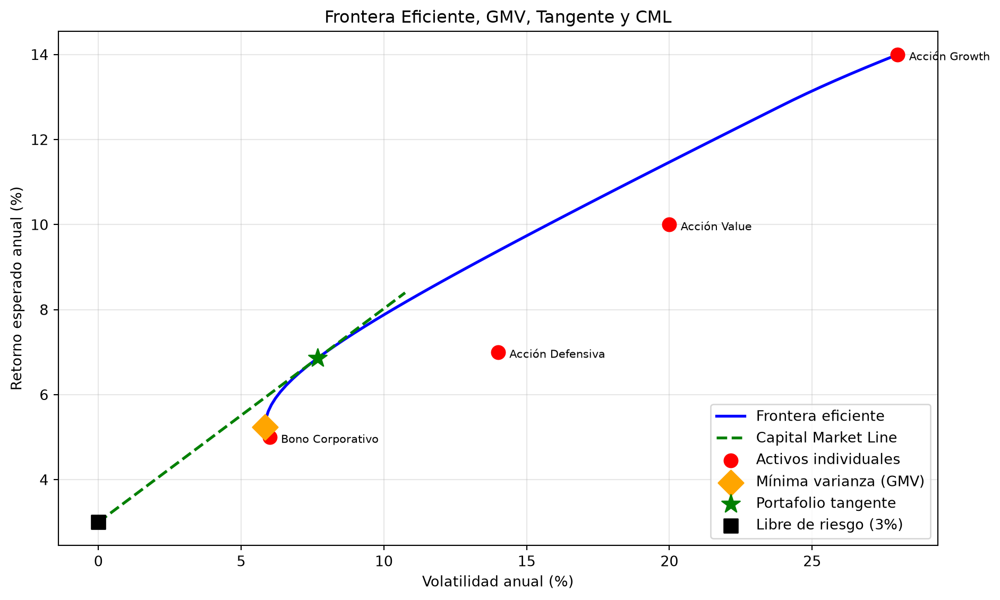
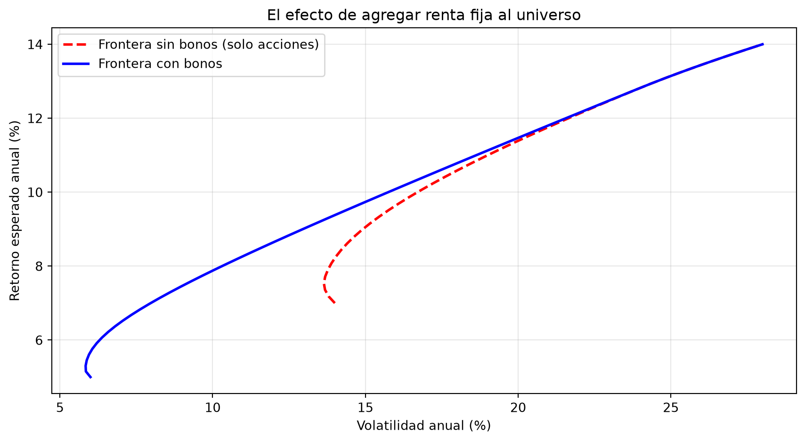

import numpy as np
import matplotlib.pyplot as plt
from scipy.optimize import minimize
np.set_printoptions(precision=4, suppress=True)
rng = np.random.default_rng(42)11 Capítulo 8: Teoría Moderna de Portafolios (Markowitz)
Frontera eficiente, métricas de desempeño y decisiones de diseño
Resumen
El modelo de Markowitz formaliza la pregunta más importante de la inversión: ¿cómo repartir el capital entre activos riesgosos? Construimos la frontera eficiente con álgebra matricial y optimización numérica, encontramos el portafolio de mínima varianza y el tangente, y discutimos las decisiones que el paper de 1952 no responde: qué métrica optimizar (Sharpe, Sortino, varianza), cómo tratar los dividendos, qué rol juega la renta fija, cuándo trabajar con retornos reales y cuándo con excesos de retorno.
12 Introducción
Hasta ahora analizamos activos de a uno: su retorno, su volatilidad, su distribución. Pero ningún inversor serio tiene un solo activo. La pregunta real es otra: ¿cómo combinar activos para obtener el mejor balance entre retorno y riesgo?
En 1952, Harry Markowitz —con 25 años— respondió esa pregunta con una idea que le valdría el Nobel: el riesgo de una cartera no es el promedio de los riesgos individuales, porque los activos no se mueven en sincronía perfecta. Cuando uno cae, otro puede subir. Esa compensación —la covarianza— es la materia prima de la diversificación, y puede medirse y optimizarse.
En este capítulo implementamos el modelo completo con NumPy y SciPy, y después nos metemos en las decisiones prácticas que todo gestor enfrenta y que el modelo básico deja abiertas.
NotaLo que ya sabés
Todo el andamiaje matemático de este capítulo —producto matricial @, matriz de covarianzas, la forma cuadrática \(\mathbf{w}^T\Sigma\mathbf{w}\)— lo construimos en el Capítulo 5 (NumPy). Y la herramienta de optimización, scipy.optimize.minimize, la vimos en el Capítulo 7. Acá las juntamos.
13 El problema en lenguaje matricial
Un portafolio de \(n\) activos queda definido por su vector de pesos \(\mathbf{w} = (w_1, \dots, w_n)\), con \(\sum w_i = 1\). Dadas las estimaciones de retornos esperados \(\boldsymbol{\mu}\) y la matriz de covarianzas \(\Sigma\):
- Retorno esperado del portafolio: \(\ E[R_p] = \mathbf{w}^T \boldsymbol{\mu}\)
- Varianza del portafolio: \(\ \sigma_p^2 = \mathbf{w}^T \Sigma \mathbf{w}\)
La segunda fórmula es la clave: incluye no solo las varianzas individuales (la diagonal de \(\Sigma\)) sino todas las covarianzas cruzadas. Ahí vive la diversificación.
# Universo de ejemplo: 4 activos con perfiles bien distintos
activos = ["Acción Growth", "Acción Value", "Acción Defensiva", "Bono Corporativo"]
mu = np.array([0.14, 0.10, 0.07, 0.05]) # retornos esperados anuales
vols = np.array([0.28, 0.20, 0.14, 0.06]) # volatilidades anuales
corr = np.array([
[1.00, 0.65, 0.45, 0.10],
[0.65, 1.00, 0.50, 0.15],
[0.45, 0.50, 1.00, 0.20],
[0.10, 0.15, 0.20, 1.00],
])
Sigma = np.outer(vols, vols) * corr # Σ = D ρ D
# Un portafolio cualquiera para arrancar
w = np.array([0.25, 0.25, 0.25, 0.25])
ret_p = w @ mu
vol_p = np.sqrt(w @ Sigma @ w)
print(f"Portafolio equiponderado:")
print(f" Retorno esperado: {ret_p:.2%}")
print(f" Volatilidad: {vol_p:.2%}")
print(f" Promedio simple de vols individuales: {vols.mean():.2%}")Portafolio equiponderado:
Retorno esperado: 9.00%
Volatilidad: 13.42%
Promedio simple de vols individuales: 17.00%Fijate el resultado: la volatilidad del portafolio es menor que el promedio de las volatilidades individuales. No elegimos nada inteligente todavía —son pesos iguales— y la diversificación ya nos regaló varios puntos de riesgo. Eso es lo que Markowitz llamó the only free lunch in finance.
14 La frontera eficiente
De todos los portafolios posibles, ¿cuáles valen la pena? Markowitz lo formuló como un problema de optimización: para cada nivel de retorno objetivo \(\mu^*\), buscar los pesos que minimizan la varianza:
\[\min_{\mathbf{w}} \ \mathbf{w}^T \Sigma \mathbf{w} \quad \text{sujeto a} \quad \mathbf{w}^T \boldsymbol{\mu} = \mu^*, \quad \mathbf{w}^T \mathbf{1} = 1\]
El conjunto de soluciones dibuja una curva en el plano riesgo-retorno: la frontera eficiente. Todo portafolio por debajo de ella es mejorable (misma volatilidad, más retorno); por encima no hay nada alcanzable.
def vol_portafolio(w, Sigma):
return np.sqrt(w @ Sigma @ w)
n = len(mu)
w0 = np.ones(n) / n # punto de partida: equiponderado
bounds = [(0, 1)] * n # sin ventas en corto
retornos_objetivo = np.linspace(mu.min(), mu.max(), 60)
frontera_vol = []
frontera_pesos = []
for r_obj in retornos_objetivo:
restricciones = [
{"type": "eq", "fun": lambda w: w.sum() - 1},
{"type": "eq", "fun": lambda w, r=r_obj: w @ mu - r},
]
res = minimize(vol_portafolio, w0, args=(Sigma,),
method="SLSQP", bounds=bounds, constraints=restricciones)
frontera_vol.append(res.fun if res.success else np.nan)
frontera_pesos.append(res.x)
frontera_vol = np.array(frontera_vol)14.1 El portafolio de mínima varianza global
Un punto especial de la frontera es su extremo izquierdo: el portafolio de mínima varianza global (GMV), el más conservador posible con estos activos. No necesita estimar retornos esperados —solo \(\Sigma\)—, lo que lo hace más robusto que el resto de la frontera (recordá: \(\boldsymbol{\mu}\) es lo más ruidoso).
res_gmv = minimize(vol_portafolio, w0, args=(Sigma,),
method="SLSQP", bounds=bounds,
constraints=[{"type": "eq", "fun": lambda w: w.sum() - 1}])
w_gmv = res_gmv.x
print("Portafolio de Mínima Varianza Global:")
for a, wi in zip(activos, w_gmv):
print(f" {a:<18} {wi:6.1%}")
print(f" Retorno: {w_gmv @ mu:.2%} | Volatilidad: {res_gmv.fun:.2%}")Portafolio de Mínima Varianza Global:
Acción Growth 0.0%
Acción Value 1.3%
Acción Defensiva 8.8%
Bono Corporativo 89.9%
Retorno: 5.24% | Volatilidad: 5.84%Como era de esperar, el GMV se carga hacia el bono (el activo menos volátil) pero no pone todo ahí: mantiene algo de acciones porque su baja correlación con el bono sigue restando riesgo total. La diversificación manda incluso cuando solo minimizás varianza.
14.2 El portafolio tangente y la Capital Market Line
Ahora agreguemos un ingrediente: un activo libre de riesgo con tasa \(r_f\) (un plazo fijo, una letra del tesoro). Poder combinar la frontera con ese activo cambia la geometría del problema: las combinaciones entre \(r_f\) y cualquier portafolio riesgoso son rectas en el plano riesgo-retorno.
¿Cuál es la mejor recta? La que sale de \(r_f\) y apenas toca la frontera: la Capital Market Line (CML). El punto de tangencia es el portafolio tangente, que maximiza el ratio de Sharpe:
\[\text{Sharpe} = \frac{E[R_p] - r_f}{\sigma_p}\]
rf = 0.03
def neg_sharpe(w, mu, Sigma, rf):
return -(w @ mu - rf) / np.sqrt(w @ Sigma @ w)
res_tan = minimize(neg_sharpe, w0, args=(mu, Sigma, rf),
method="SLSQP", bounds=bounds,
constraints=[{"type": "eq", "fun": lambda w: w.sum() - 1}])
w_tan = res_tan.x
ret_tan, vol_tan = w_tan @ mu, np.sqrt(w_tan @ Sigma @ w_tan)
sharpe_tan = (ret_tan - rf) / vol_tan
print("Portafolio Tangente (máximo Sharpe):")
for a, wi in zip(activos, w_tan):
print(f" {a:<18} {wi:6.1%}")
print(f" Retorno: {ret_tan:.2%} | Vol: {vol_tan:.2%} | Sharpe: {sharpe_tan:.3f}")Portafolio Tangente (máximo Sharpe):
Acción Growth 14.9%
Acción Value 7.9%
Acción Defensiva 6.1%
Bono Corporativo 71.1%
Retorno: 6.85% | Vol: 7.67% | Sharpe: 0.502fig, ax = plt.subplots(figsize=(10, 6))
# Frontera eficiente
ax.plot(frontera_vol * 100, retornos_objetivo * 100, "b-", linewidth=2,
label="Frontera eficiente")
# Capital Market Line: recta desde (0, rf) que pasa por el tangente
x_cml = np.linspace(0, vol_tan * 1.4, 50)
ax.plot(x_cml * 100, (rf + sharpe_tan * x_cml) * 100, "g--", linewidth=2,
label="Capital Market Line")
# Puntos notables
ax.scatter(vols * 100, mu * 100, s=90, c="red", zorder=5, label="Activos individuales")
for a, v, m in zip(activos, vols, mu):
ax.annotate(a, (v * 100, m * 100), textcoords="offset points",
xytext=(8, -4), fontsize=8)
ax.scatter(res_gmv.fun * 100, (w_gmv @ mu) * 100, s=160, c="orange", marker="D",
zorder=6, label="Mínima varianza (GMV)")
ax.scatter(vol_tan * 100, ret_tan * 100, s=180, c="green", marker="*",
zorder=6, label="Portafolio tangente")
ax.scatter(0, rf * 100, s=90, c="black", marker="s", zorder=6,
label=f"Libre de riesgo ({rf:.0%})")
ax.set_xlabel("Volatilidad anual (%)")
ax.set_ylabel("Retorno esperado anual (%)")
ax.set_title("Frontera Eficiente, GMV, Tangente y CML")
ax.legend(loc="lower right")
ax.grid(True, alpha=0.3)
plt.tight_layout()
plt.show()
La lectura del gráfico es una de las ideas más profundas de las finanzas: con un activo libre de riesgo disponible, la frontera curva deja de ser el menú óptimo. Todo inversor racional debería pararse sobre la CML: elegir el portafolio tangente para su plata riesgosa, y regular su nivel de riesgo total moviendo la proporción entre el tangente y el activo libre de riesgo. El conservador pone 30% en el tangente y 70% a tasa; el agresivo, todo en el tangente (o incluso se apalanca). La composición de la parte riesgosa es la misma para ambos.
15 ¿Qué métrica optimizar? Sharpe, Sortino y compañía
Hasta acá maximizamos Sharpe como si fuera la única opción. No lo es, y elegir la función objetivo es una decisión de diseño con consecuencias. Repasemos el menú:
| Objetivo | Qué premia / castiga | Cuándo tiene sentido |
|---|---|---|
| Mínima varianza | Castiga toda dispersión, ignora el retorno | Perfil ultraconservador; cuando desconfiás de tu estimación de \(\mu\) |
| Máximo retorno | Ignora el riesgo por completo | Casi nunca solo: lleva a concentrar todo en el activo más prometedor |
| Máximo Sharpe | Retorno en exceso por unidad de volatilidad total | El estándar de la industria para comparar estrategias |
| Máximo Sortino | Como Sharpe, pero solo castiga la volatilidad a la baja | Cuando la distribución es asimétrica y no querés castigar las subas |
El punto fino está entre Sharpe y Sortino. La volatilidad castiga ambas colas: para el Sharpe, un activo que da sorpresas positivas enormes es tan “riesgoso” como uno que se derrumba. El Sortino corrige eso usando en el denominador solo la desviación a la baja (downside deviation), calculada con los retornos por debajo de un umbral (típicamente \(r_f\) o cero):
\[\text{Sortino} = \frac{E[R_p] - r_f}{\sigma_{down}}, \qquad \sigma_{down} = \sqrt{\frac{1}{n}\sum_{r_i < \tau} (r_i - \tau)^2}\]
# Simulamos la historia de dos estrategias con igual media y varianza...
n_dias = 2500
r_A = rng.normal(0.0005, 0.012, n_dias) # simétrica
# ...pero B tiene asimetría positiva: pierde poco seguido, gana mucho de a ratos
r_B = rng.exponential(0.009, n_dias) - 0.0085
r_B = (r_B - r_B.mean()) / r_B.std() * 0.012 + 0.0005 # igual media y desvío que A
rf_diario = 0.03 / 252
def sharpe_anual(r):
return (r.mean() - rf_diario) / r.std() * np.sqrt(252)
def sortino_anual(r, umbral=rf_diario):
downside = np.sqrt(np.mean(np.minimum(r - umbral, 0) ** 2))
return (r.mean() - umbral) / downside * np.sqrt(252)
print(f"{'':12}{'Sharpe':>8}{'Sortino':>9}{'Asimetría':>11}")
for nombre, r in [("Estrategia A", r_A), ("Estrategia B", r_B)]:
from scipy import stats
print(f"{nombre:<12}{sharpe_anual(r):>8.2f}{sortino_anual(r):>9.2f}"
f"{stats.skew(r):>11.2f}") Sharpe Sortino Asimetría
Estrategia A -0.20 -0.28 -0.04
Estrategia B 0.50 1.02 1.96Las dos estrategias tienen el mismo Sharpe (misma media, misma varianza), pero el Sortino revela que B pierde de manera más contenida: su riesgo “malo” es menor. Si tu inversor sufre las caídas más de lo que disfruta las subas —o sea, si es humano—, el Sortino describe mejor su experiencia.
Tip¿Cuál usar?
No hay respuesta universal, pero sí una guía: Sharpe para comparar y comunicar (todo el mundo lo entiende y lo calcula igual), Sortino cuando la asimetría importa (estrategias con opciones, crédito, o cualquier cosa con colas raras), mínima varianza cuando no confiás en tus retornos esperados, y “máximo retorno” solo como provocación intelectual. Y siempre mirá más de una métrica: cada una ilumina un ángulo distinto.
16 Los inputs importan más que el optimizador
El 90% del esfuerzo práctico en Markowitz no está en la optimización (eso lo hace scipy en milisegundos) sino en estimar bien \(\boldsymbol{\mu}\) y \(\Sigma\). Tres decisiones concretas que cambian los resultados:
16.1 Dividendos: usar retorno total, no solo precio
El retorno de una acción tiene dos componentes: la variación del precio y los dividendos. Ignorarlos —un error común al bajar series de precios sin ajustar— subestima sistemáticamente \(\mu\):
\[R_{total} = \underbrace{\frac{P_t - P_{t-1}}{P_{t-1}}}_{\text{apreciación}} + \underbrace{\frac{D_t}{P_{t-1}}}_{\text{dividend yield}}\]
# Una acción "value" típica: sube poco de precio pero reparte 4% anual
apreciacion = 0.05
dividend_yield = 0.04
print(f"Retorno solo-precio: {apreciacion:.1%}")
print(f"Retorno total: {apreciacion + dividend_yield:.1%}")
# En 20 años, la diferencia es enorme por capitalización:
print(f"\n$100 a 20 años, solo precio: ${100 * (1 + apreciacion) ** 20:,.0f}")
print(f"$100 a 20 años, retorno total: ${100 * (1 + apreciacion + dividend_yield) ** 20:,.0f}")Retorno solo-precio: 5.0%
Retorno total: 9.0%
$100 a 20 años, solo precio: $265
$100 a 20 años, retorno total: $560Para un optimizador, esto no es un detalle: una acción de alto dividendo puede parecer mediocre mirando solo el precio y ser excelente en retorno total. Usá siempre precios ajustados por dividendos (adjusted close) o sumá el yield explícitamente.
16.2 Renta fija en el universo: más que “el activo sin riesgo”
En el modelo de la CML, la renta fija aparece como el activo libre de riesgo de volatilidad cero. Pero un bono real (como los que valuamos en el Módulo 1) no es eso: tiene riesgo de tasa (duración), riesgo de crédito y volatilidad de precio. La forma correcta de tratarlo es incluirlo como un activo riesgoso más dentro del universo, con su \(\mu\), su \(\sigma\) y —lo más valioso— su baja correlación con las acciones.
Ya lo hicimos sin decirlo: nuestro cuarto activo es un bono corporativo. Mirá cuánto aporta:
# Frontera SIN el bono (solo los 3 primeros activos)
mu3, Sigma3 = mu[:3], Sigma[:3, :3]
w03 = np.ones(3) / 3
vols_sin_bono = []
rets_grid = np.linspace(mu3.min(), mu3.max(), 40)
for r_obj in rets_grid:
res = minimize(vol_portafolio, w03, args=(Sigma3,), method="SLSQP",
bounds=[(0, 1)] * 3,
constraints=[{"type": "eq", "fun": lambda w: w.sum() - 1},
{"type": "eq", "fun": lambda w, r=r_obj: w @ mu3 - r}])
vols_sin_bono.append(res.fun)
fig, ax = plt.subplots(figsize=(9, 5))
ax.plot(np.array(vols_sin_bono) * 100, rets_grid * 100, "r--", linewidth=2,
label="Frontera sin bonos (solo acciones)")
ax.plot(frontera_vol * 100, retornos_objetivo * 100, "b-", linewidth=2,
label="Frontera con bonos")
ax.set_xlabel("Volatilidad anual (%)")
ax.set_ylabel("Retorno esperado anual (%)")
ax.set_title("El efecto de agregar renta fija al universo")
ax.legend()
ax.grid(True, alpha=0.3)
plt.tight_layout()
plt.show()
La frontera con bonos domina a la de solo-acciones en toda la zona de riesgo bajo y medio: para los mismos retornos objetivo, menos volatilidad. El bono no está ahí por su retorno (es el más bajo del universo) sino por su correlación baja: es el mejor diversificador de la mesa. Esta es la base cuantitativa del clásico portafolio 60/40.
16.3 Inflación y horizontes largos: deflactar o engañarse
Cuando el análisis abarca períodos largos —décadas de historia, o economías de alta inflación—, trabajar con retornos nominales distorsiona todo. Un retorno nominal del 40% anual con inflación del 45% es una pérdida de poder adquisitivo, aunque el número se vea espectacular. La conversión correcta es:
\[1 + r_{real} = \frac{1 + r_{nominal}}{1 + \pi} \quad\Rightarrow\quad r_{real} = \frac{r_{nominal} - \pi}{1 + \pi}\]
casos = [
("EEUU, año típico", 0.10, 0.03),
("Argentina, año de alta inflación", 0.40, 0.45),
("Argentina, buen año real", 0.80, 0.50),
]
print(f"{'Caso':<34}{'Nominal':>9}{'Inflación':>11}{'Real':>8}")
for nombre, r_nom, pi in casos:
r_real = (r_nom - pi) / (1 + pi)
print(f"{nombre:<34}{r_nom:>8.0%}{pi:>10.0%}{r_real:>8.1%}")Caso Nominal Inflación Real
EEUU, año típico 10% 3% 6.8%
Argentina, año de alta inflación 40% 45% -3.4%
Argentina, buen año real 80% 50% 20.0%¿Por qué importa para Markowitz? Porque en series largas o inflacionarias, la inflación infla artificialmente las medias y las correlaciones: todos los activos “suben” juntos con el nivel de precios, y el optimizador cree ver retornos altos y co-movimientos que no existen en términos reales. La regla práctica:
- Horizontes cortos y baja inflación (retornos diarios/mensuales en economías estables): trabajar en nominal es aceptable; la inflación es un ruido de fondo casi constante.
- Horizontes largos o alta inflación: deflactá las series (o trabajá en una moneda dura de referencia) antes de estimar \(\mu\) y \(\Sigma\). Lo que le importa al inversor es el poder de compra, no los pesos nominales.
16.4 ¿Retornos directos o excesos de retorno?
Última decisión de diseño: ¿optimizamos sobre los retornos “crudos” de cada activo, o sobre su exceso respecto de una referencia (\(r_i - r_f\), o \(r_i - r_{mkt}\))? La respuesta depende de qué pregunta estés haciendo:
- Retornos directos (o reales) — cuando la pregunta es de asignación de capital total: “tengo \(X\), ¿cómo lo reparto?”. El nivel absoluto de cada retorno importa, porque la alternativa de no invertir (o de quedarse en tasa) es parte del problema. La frontera y la CML de este capítulo trabajan así.
- Excesos sobre la tasa libre de riesgo (\(r_i - r_f\)) — cuando la tasa varía en el tiempo y querés que tu estimación de \(\mu\) no mezcle “premio por riesgo” con “nivel de tasas”. El ratio de Sharpe ya está definido sobre excesos; estimar directamente en excesos hace todo más consistente, especialmente con datos que cruzan regímenes de tasas muy distintos.
- Excesos sobre el mercado (\(r_i - r_{mkt}\)) — cuando el problema no es asignar capital sino construir una cartera activa que le gane a un benchmark. Ahí lo que optimizás es el tracking error y el exceso de retorno relativo; el riesgo “de mercado” es irrelevante porque el benchmark ya lo carga. Es el mundo de los fondos con mandato relativo.
AdvertenciaEl error clásico
Mezclar marcos: estimar \(\mu\) como promedio de retornos nominales de una década de tasas altas, y usarlo para optimizar hoy con tasas bajas. El “premio” que el optimizador ve es en gran parte nivel de tasas que ya no existe. Trabajar en excesos sobre \(r_f\) inmuniza contra esto.
17 Las limitaciones del modelo (y adónde vamos)
Markowitz es el punto de partida de toda la teoría de portafolios, pero conviene salir del capítulo con sus límites claros:
- Hipersensibilidad a los inputs: cambios chicos en \(\boldsymbol{\mu}\) producen carteras completamente distintas, y \(\boldsymbol{\mu}\) es casi imposible de estimar bien. Es el problema que atacan HRP (capítulo siguiente, esquivando la inversión de \(\Sigma\)) y Black-Litterman (Capítulo 10, disciplinando la estimación de \(\mu\)).
- Supone que la varianza captura el riesgo: ignora asimetrías y colas pesadas. Las métricas de cola (VaR, Expected Shortfall) llegan en el Módulo 3.
- Un solo período: el modelo decide una vez y se queda quieto; no contempla rebalanceo, costos de transacción ni impuestos.
- Las correlaciones no son constantes: en las crisis, justo cuando más importa, las correlaciones suben y la diversificación se evapora. Lo veremos con crudeza en el capítulo de riesgo y regulación.
Nada de esto “refuta” a Markowitz: define la agenda de todo lo que sigue en el libro.
18 Errores comunes
AdvertenciaTrampas frecuentes
- Anualizar mal: los retornos escalan por \(T\) (×252 de diario a anual) pero la volatilidad escala por \(\sqrt{T}\) (×\(\sqrt{252}\)). Mezclar las dos reglas rompe todos los ratios.
- Usar precios sin ajustar por dividendos: subestima el retorno de los activos de alto yield y sesga la optimización hacia las acciones growth.
- Olvidar las restricciones: sin
bounds=[(0,1)], el optimizador puede sugerir ventas en corto del 300%. Verificá siempre que la solución sea implementable. - Confiar en un único punto de partida:
minimizepuede quedar atrapado en óptimos locales con restricciones complejas. Ante dudas, probá variosw0. - Interpretar la frontera como predicción: la frontera es óptima para las estimaciones que le diste. Si \(\mu\) y \(\Sigma\) están mal, la frontera es una ficción precisa.
19 Ejercicios Propuestos
ImportanteEjercicios
- CML completa: calculá qué combinación de tangente + activo libre de riesgo necesita un inversor que tolera exactamente 10% de volatilidad anual. ¿Qué retorno esperado obtiene?
- Sortino como objetivo: reemplazá la función
neg_sharpepor unaneg_sortino(usá retornos simulados del portafolio) y compará las carteras resultantes. - Short-selling: recalculá la frontera con
bounds=[(-1, 2)](cortos permitidos). ¿Cuánto mejora? ¿Los pesos resultantes te parecen implementables? - Efecto dividendos: bajá 3 puntos el \(\mu\) del activo “Value” (simulando que ignoraste su dividendo) y mirá cómo cambia el portafolio tangente. ¿Te parece un cambio proporcional al error?
- Deflactar: simulá 10 años de retornos nominales mensuales con inflación mensual del 2%, estimá la frontera en nominal y en real, y compará los pesos.
- Datos reales: descargá precios ajustados de 5 acciones y un ETF de bonos, estimá \(\mu\) y \(\Sigma\) con retornos mensuales, y construí frontera, GMV y tangente.
20 Referencias
- Markowitz, H. (1952). Portfolio Selection. The Journal of Finance, 7(1), 77–91.
- Sharpe, W. (1966). Mutual Fund Performance. The Journal of Business, 39(1), 119–138.
- Sortino, F., & van der Meer, R. (1991). Downside Risk. The Journal of Portfolio Management, 17(4), 27–31.
- Elton, E., Gruber, M., Brown, S., & Goetzmann, W. (2014). Modern Portfolio Theory and Investment Analysis. Wiley.
- Dimson, E., Marsh, P., & Staunton, M. (2002). Triumph of the Optimists: 101 Years of Global Investment Returns. Princeton University Press.